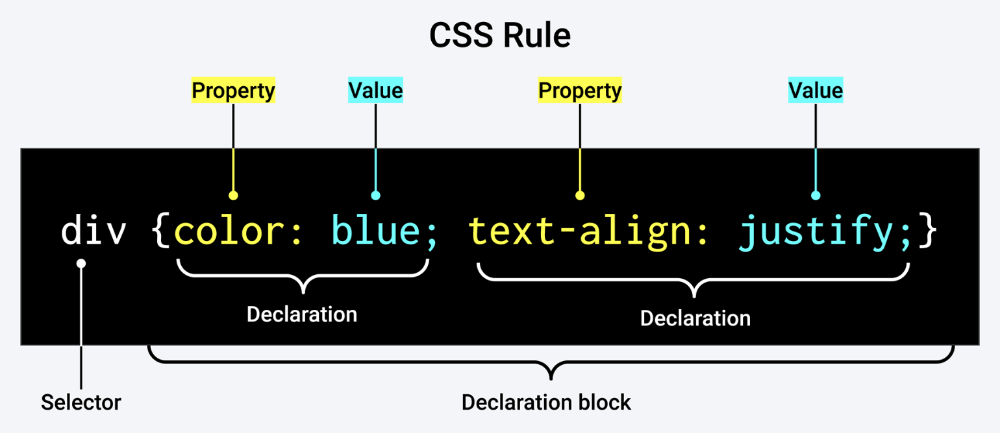

Important Links
Terminal
Terminal commands
- pwd - print working directory // this shows what folder you're in
- li - list // this lists the files in the folder you're in
- cd - change directory // navigate to a different folder using slashes (example: cd users/finnlambouris)
- cd .. - navigate backwards // move up a folder
- mkdir - make directory // creates folder (example mkdir coding-bootcamp)
- touch - create file // create a file with any file extension (like this .txt file)
- open - open file or folder // this opens the file or folder in the apporpriate application
- rm - remove // rm [filename] deletes a file
Git Commands:
SETUP & INIT - Configuring user information, initializing and cloning repositories
- git init - initialize an existing directory as a Git repository
- git clone [url] - retrieve an entire repository from a hosted location via URL
STAGE & SNAPSHOT - Working with snapshots and the Git staging area
- git status - show modified files in working directory, staged for your next commit // shows what branch we're on
- git add [file] - add a file as it looks now to your next commit (stage): git add -A adds all changes
- git reset [file] - unstage a file while retaining the changes in working directory
- git diff - diff of what is changed but not staged
- git diff --staged - diff of what is staged but not yet committed
- git commit -m “[descriptive message]” - commit your staged content as a new commit snapshot
BRANCH & MERGE - Isolating work in branches, changing context, and integrating changes
- git branch - list your branches. a * will appear next to the currently active branch
- git branch [branch-name] - create a new branch at the current commit
- git checkout - switch to another branch and check it out into your working directory
- git checkout -b [insert new branch name] creates a branch
- git branch -d [insert branch name] - deletes git branch
- git merge [branch] - merge the specified branch's history into the current one
- git log - show all commits in the current branch's history
*note: remote branches (on server) will appear as red, while local branches (on computer) will appear as green
INSPECT & COMPARE - Examining logs, diffs and object information
- git log - show the commit history for the currently active branch
- git log branchB..branchA - show the commits on branchA that are not on branchB
- git log --follow [file] - show the commits that changed file, even across renames
- git diff branchB...branchA - show the diff of what is in branchA that is not in branchB
- git show [SHA]- show any object in Git in human-readable format
TRACKING PATH CHANGES - Versioning file removes and path changes
- git rm [file] - delete the file from project and stage the removal for commit
- git mv [existing-path] [new-path] - change an existing file path and stage the move
- git log --stat -M - show all commit logs with indication of any paths that moved
IGNORING PATTERNS - Preventing unintentional staging or committing of files
- logs/
*.notes
pattern*/ - Save a file with desired patterns as .gitignore with either direct string matches or wildcard globs. - git config --global core.excludesfile [file] - system wide ignore pattern for all local repositories
SHARE & UPDATE - Retrieving updates from another repository and updating local repos
- git remote add [alias] [url] - add a git URL as an alias
- git fetch [alias] - fetch down all the branches from that Git remote
- git merge [alias]/[branch] - merge a remote branch into your current branch to bring it up to date
- git push [alias] [branch] - Transmit local branch commits to the remote repository branch
- git pull - fetch and merge any commits from the tracking remote branch
REWRITE HISTORY - Rewriting branches, updating commits and clearing history
- git rebase [branch] - apply any commits of current branch ahead of specified one
- git reset --hard [commit] - clear staging area, rewrite working tree from specified commit
TEMPORARY COMMITS - Temporarily store modified, tracked files in order to change branches
- git stash - Save modified and staged changes
- git stash list - list stack-order of stashed file changes
- git stash pop - write working from top of stash stack
- git stash drop - discard the changes from top of stash stack
GitHub
Pulling from and pushing to GitHub
- Make sure you're in the correct folder
- To check what branch we are currently on, enter: git status
- To make a new branch, we'll enter: git checkout -b feature/[enter name]
- The checkout command is to move the working branch to a new branch, and the -b flag creates a new branch.
- It's good to do "feature/" to indicate that it is a feature. It is good practice to name the branches for the feature that will be developed by them to help indicate the purpose of each branch.
- To add/update code to the current working branch, enter: git add -A
- The -A flag indicates that we want to add all changes.
- To commit these files to the repo, enter: git commit -m [enter message]
- If you forget to add the -m message, it will open up a new window where you must type the message. In this window, press I to enter insert mode and then type your message. When you're done, press esc to exit insert mode, and then press :wq to write and quit.
- Always double check to make sure your local branch is in sync with the base branch in GitHub. To do this, enter: git pull origin main
- Use the pull command to receive a branch's modifications into the local environment. "origin" indicates the source of the pull will be in the GitHub repo. "main" indicates the branch.
- If all is well, you should receive the message "Already up to date."
- Finally, to push changes, enter: git push origin feature/[enter name]
- After this, when you open GitHub you'll see that there is a pull request. Great job!
Helpful Links
HTML
- The head element contains information about the webpage.
- The body element represents the visible content shown to the user.
- <a href="[url]">[link text]</a> - adding a link
- <img src="[url or path]" alt="[image description]">- adding an image
- <!-- [insert comment] --> - add comments in html file without them showing up on the actual webpage
Helpful Links
CSS
- 
- * - selects all elements visible on the page
- to link an external stylesheet to your HTML file, you must type <link rel="Stylesheet" href=[insert path to Stylesheet]>
Helpful Links
JavaScript
- JavaScript linking should be added at the bottom of your code, directly before the /body closing tag. This is because the code is read in order from beginning to end by the browser, and we don't want any functions to run before the page is fully loaded.
- <script src="[path to .js file]"> - links JavaScript file to html webpage
- /*
[insert comment]
*/ - add multiple lines of comments in the JavaScript file without them showing up on the actual webpage - // [insert comment] - add a single line of comments in the JavaScript file without them showing up on the actual webpage
- JavaScript starts array counts from 0, not 1